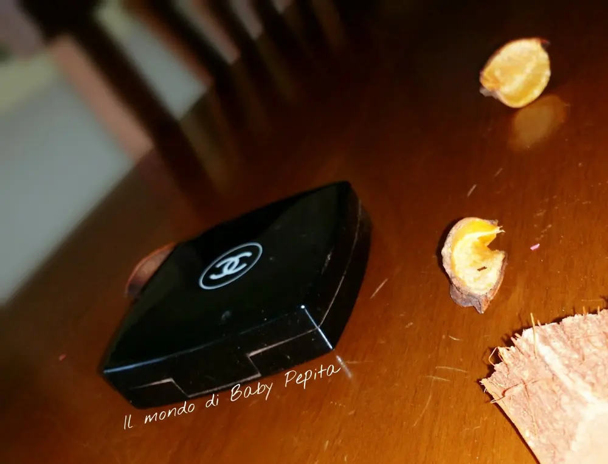
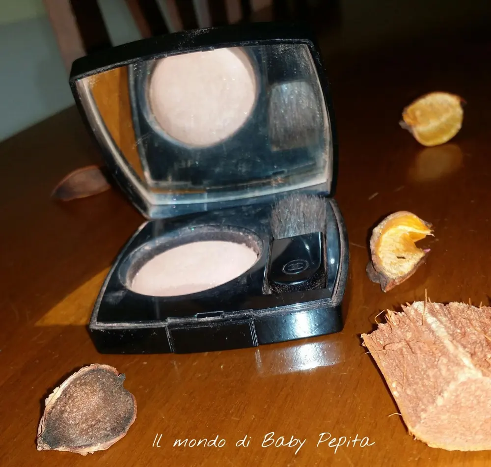
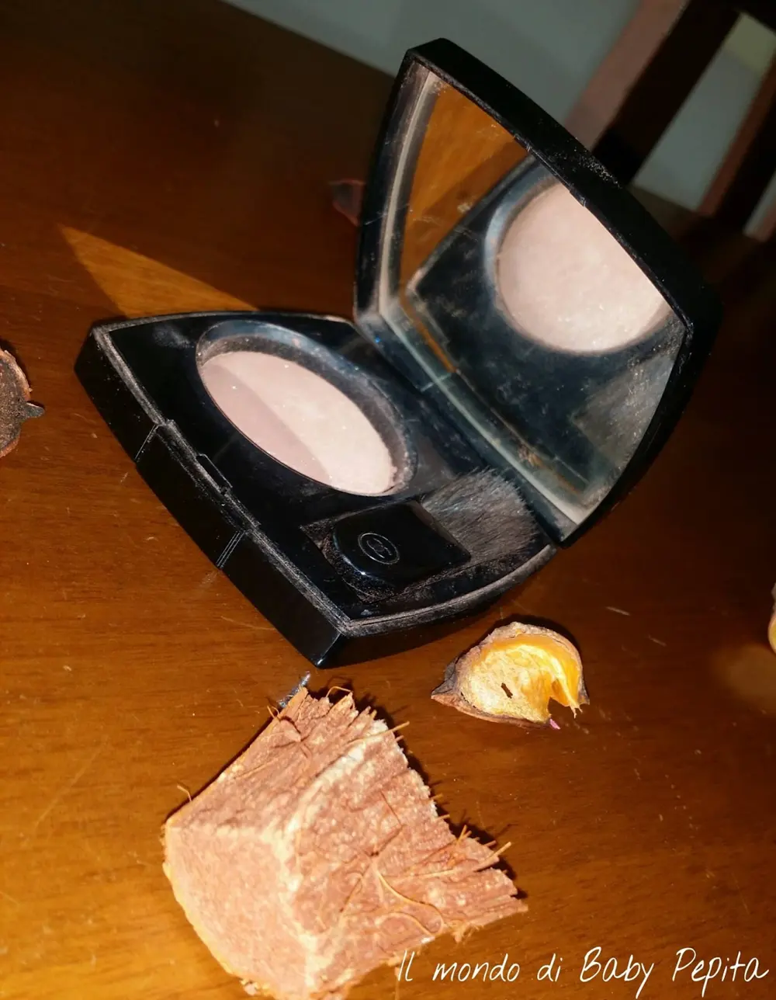
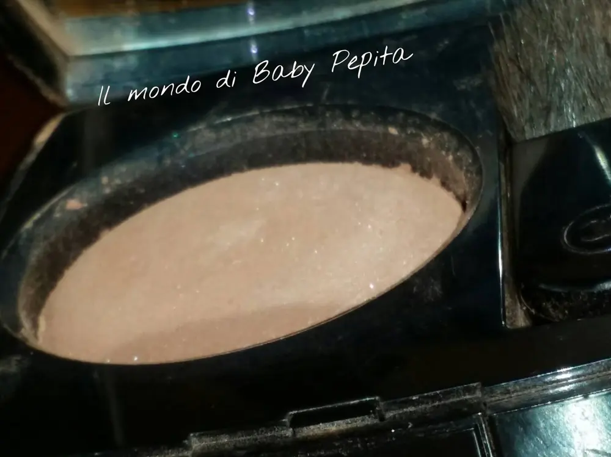
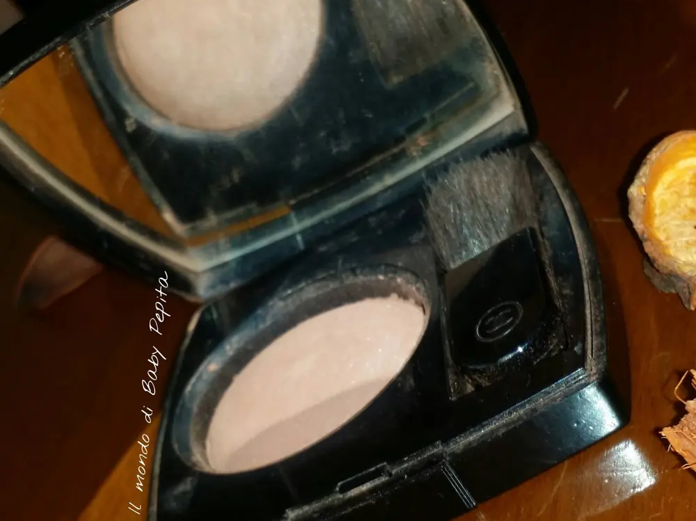
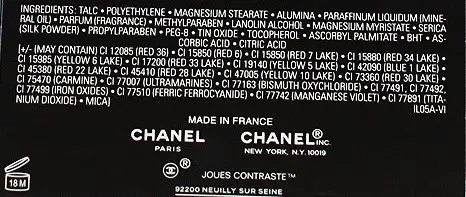
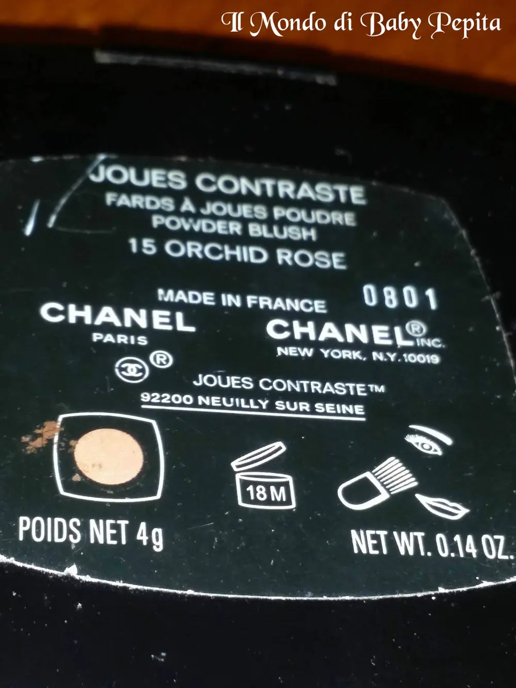
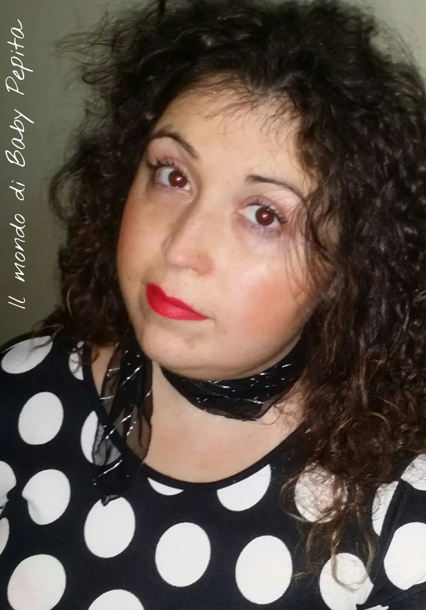

Chanel - FARD IN POLVERE - blush - 15 ORCHID ROSE
Parlarvi di questo brand per me è come parlare di un illustre filosofo. Il più ammirato e conosciuto, poichè per me la Chanel è uno dei brand che più amo. .
Oggi vi mostrerò il 'fard joues poudre powder blush'
tonalità N°15 ORCHID ROSE

Questo blush offre effetti luminosi sin da subito dando un tocco sofisticato al viso.Usato nella dose giusta dà alla carnagione un colorito sano.

Si presenta come una cialda in un elegante cofanetto tutto nero, come lo stile ormai intramontabile di Chanel. Accanto troviamo il pennellino anch'esso rigorosamente nero con il marchio inciso sopra.Alzando il tappo troviamo lo specchietto che è bello ampio e non piccolo, sufficiente anche da tenerlo in borsetta.

Con un tono gentile, il colore Orchid Rose non è molto shimmer, ma ha un filo di satinato che sulla pelle è quasi impercettibile, donando così solo il colore e la luminosità del beige rosato.

Ho avuto modo di provare questo fard in polvere (si nota dalle condizioni dell'astuccio ahahah) in tutte le sue sfumature in quanto ce l'ho da diverso tempo e devo dire che ne basta davvero una minima quantità per colorare gli zigomi così da sembrare subito perfetta.


Come già detto, ho provato e riprovato questo blush diventando ora uno dei must che non rinuncio.
Sono soddisfatta sia per la durata sia per la leggerezza della polvere.
E' una polvere liscia che si stende facilmente.
Indossando Orchid Rose ho avuto più complimenti che con qualsiasi altro blush. Anche con un semplice makeup (es: mascara, eyeliner e blush), è fantastico perchè dona colore senza esagerare.
Se potessi scegliere un solo Chanel blush sceglierei Orchid rosa.
La confezione contiene 18 grammi di prodotto ed è disponibile in 15 colorazioni.INCI: (foto sotto)


Prezzo: 40,00 €
